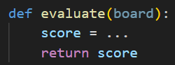
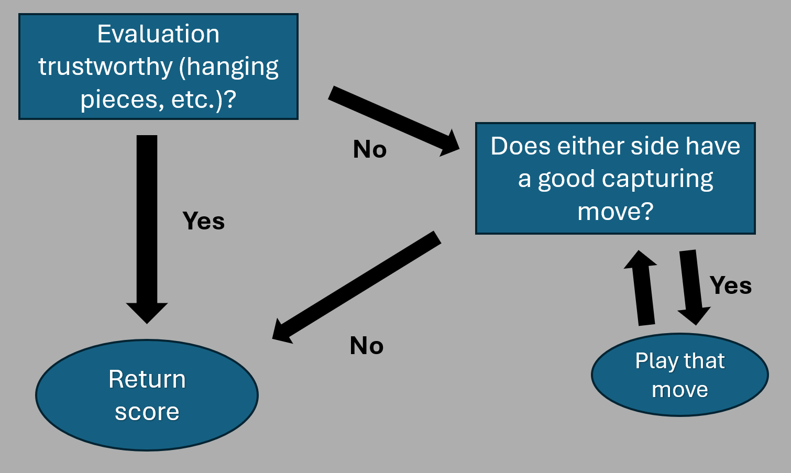

Coding a Chess Robot from scratch
Please meet Robot J. Fischer, a chess bot I coded from scratch in Python! On this page, you can find out how Robot J. Fischer was built, and how you can test it (and your chess skills) online. This project is a coding challenge I set out to complete when I caught a cold in June 2025. My original goal was to code a bot that would be able to beat me at chess - we'll see how that turned out below.
When I decided to tackle this project, there were a few decisions (or design choices) I made:
- The bot had to be coded entirely by me in Python - no endgame tables, online ressources or opening books.
- I would not look at instructions online, or research how chess bots are usually implemented. Admittedly, I was not entirely new to the topic since I knew stories of people completing similar projects before, and I did use online ressources when I got stuck. But I figured that it would still be more fun to go in blind and develop my own concepts, instead of merely implementing methods others have used long before me.
- I want to teach the bot to play chess like a human. Robot J. Fischer needs to learn the same basic chess principles we teach to every chess beginner, and it should not contain any unnatural methods like piece-square-tables
The evaluation function
It quickly became clear to me that the heart of my bot had to be some kind of evaluation function. This function performs a stratetic (rather than tactical) assessment of a given board and decides how good (or bad) this position is for either player.
This function was the first thing I worked on. The challenge is to find the right metrics that make a chess position good for either color, and to find a way to implement them in Python in a computationally efficient way. The obvious starting point is the current material count, but I kept editing this function during the whole coding process to account for more factors that a human chess player would also consider:
- How much space (= how many legal moves) each side has
- How well each side defends their pieces and attacks the opponents
- If there are any passes pawns, or pawns close to promotion
- How save (= close to the corner) every king is, except during the endgame
- During the opening phase: How well each side occupies the center with pawns develops their pieces and whether they moved their king
- During the final moves of the game: How well the own king is activated and the opponent's king is forced to the corner
Based on this evaluation function, we can already set up a minimal working example of a chess bot: Given a position, go through every legal move and play the one that maximizes the evaluation function (or minimizes it, if you are playing with the black pieces) Of course, this bot has a profound weakness: It cannot take the opponent's responses into account. For example, if will gladly sacrifice its queen to take your pawn, as this move will momentarily boost the evaluation in its favour.
Improving the search alogrithm
This immediate problem can be solved by the bot looking one move deeper. We can tell it to consider every legal move, and every legal response for each move. This will make the bot considerably stronger, but the fundamental issue remains: The evaluation function is not reliable if applied to positions with an "ongoing capture sequence".
I came up with the following key idea: The evaluation function should not only return a numerical score, but also the information whether this score is trustworthy or not. The actual implementation of this idea was rather cumbersome, but the basic idea is to scan the current position for hanging pieces and capturing moves that win material at first sight. If the algorithm decides that the naive evaluation is not to be trusted, it can use these same tools to think through all outstanding capture sequences, finally arriving at a reliable evalution of the current position.
This iterative process is the key to the search algorithm of Robot J. Fischer - it reduces blunders significantly and gives it a respectable tactical awareness.
What's next?
At this stage, the bot is already a decent chess player, and it can beat most beginners quite comfortably. The next obvious conceptual step is to increase the search depth of the bot, so that it calculates variants more deeply and reliably. I implemented a backtracking algorithm that allows the bot to calculate positions to arbitrary depth, even though it runs into runtime problems fairly quickly. This is why I spent a lot of time on making the bot faster. One key idea is to idetify a list of candidate moves, i.e. moves that are more likely to be good, and to make the bot search through these moves first. If it later finds a move that is worse than one of these candidate moves, it can discard this entire branch of the search tree immediately.
This improved the speed of the programme quite a bit, but it was still too slow to justify upgrading the search depth Ultimately, I had to settle for the original base search depth of two, which is increased only if the bot spots a promising tactical combination.
Playing against Robot J. Fischer
So how did Robot J. Fischer actually perform in playtesting?
I have to admit that I fell short of my original goal to create a bot that beat me at chess. It still makes
many mistakes, and its strategic understanding is no match for a human player with some experience in the game. The programme is, however, a formidable opponent for someone who is new to chess or plays the game casually - I am
proud to say that Robot J. Fischer, despite its flaws and limitations, was able to beat a few of my friends and family members rather convincingly. It also performed quite well against fellow engines, as you can tell from the game below.
As you can see, Robot J. Fischer struggled at first and lost a piece, but still managed to score a nice comeback win.
Have you become curious about this project? The good news is, you too can see everything I just talked about in action and play against Robot J. Fischer yourself. After finishing the code, I uploaded the bot to the world's best chess website, lichess.org. Feel free to look through the profile and challenge it to a friendly match!
Visit the bot on lichessLet me make a few comments: please note that the bot can only respond to challenges if I am currently running the code on my PC. If not, you may want to challenge it to a correspondence game - the bot will accept the challenge as soon as he is back online. Please also remember to give the bot enough time to think - if you send it a challenge, I recommend a time control of at least 10 minutes + 5 seconds per move.
I hope Robot J. Fischer will be a worthy opponent for you, and that you will have as much fun playing it as I had creating the bot.